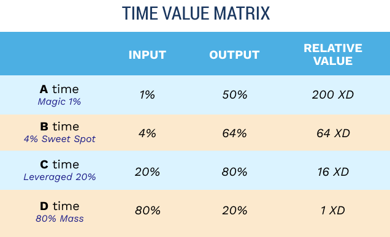

As a business owner, you don’t get paid for time and effort; you get paid for creating value. So as you build your business, look for ways to create value independent of your personal time. This essentially is what it means to build a business, not a job. If you’ve read anything on time management, you’ve come across Pareto’s Principle, inspired by the work of nineteenthcentury economist Vilfredo Pareto. Commonly called the 80‑20 Rule, Pareto’s Principle states that 20 percent of your actions generate 80 percent of your results (high value) and 80 percent of your actions generate the other 20 percent of your results (low value). This useful distinction becomes the basis of a refined model for using your time to create massive value, independent of the hours you put in. If you take the 20 percent of your actions that generate 80 percent of your results and apply the same distinction a second time, then 20 percent of that 20 percent produces 80 percent of 80 percent of your results. That means 4 percent of your effort (the 20 percent of 20 percent) generates 64 percent of your results (80 percent of 80 percent). And if you can bear with us for one more math moment, apply this distinction one final time. Only 1 percent of your effort (20 percent of 20 percent of 20 percent) generates 50 percent of your results! That’s right—a tiny fraction of your highest-leverage work produces half of all your results.

We want to help you focus your time on the most valuable activities. That’s why we used this distinction to create the Time Value Matrix—a visual hierarchy of the four types of time: A Time, B Time, C Time, and D Time.
D time is the 80 percent of unleveraged, wasteful time that produces only 20 percent of your total return. We call this the “80 Percent Mass.” We’ve given it a relative value of 1. C time is the leveraged 20 percent of your time that produces 80 percent of your results. We call this “Leveraged Time.” It has a relative value of 16 (¼ less input generating 4 × more output). B time is the highly focused 4 percent that generates 64 percent of your results. We call this time the “4 Percent Sweet Spot.” (It has a relative value of 64. That means one hour of B time produces 64 times the value of the same time spent on a D activity.) A time is the top of the pyramid—the “Magic 1 Percent.” Fully 50 percent of your results come from these activities. (A time has a relative value of 200 times that of D time.)
Most business owners have no clue which of their activities fall into these four categories. How in the world can you create more value in the same or less time if you don’t know what activities constitute A and B time for you?
Identify your A/B/C/D activities and learn what you do that truly creates value for your business. List five of the tasks or activities you currently do at each level.
D Time: The 80 percent mass of unleveraged, wasteful time that produces only 20 percent of your total return. Examples of Jeff’s D activities include: reading emails to route them internally, reviewing bills to spot discrepancies, scheduling meetings and calls, reviewing meeting notes to determine required follow-ups, and writing replies to low-level emails. C Time: The leveraged 20 percent that produces 80 percent of your results. Examples of David’s C activities include: delegating to his assistant, dictating a letter, holding a group meeting versus talking with several people one at a time, updating his master to-do list, and sending out an email update to his executive team. B Time: The highly focused 4 percent “sweet spot” that generates 64 percent of your results. Examples of Jeff’s B activities include: meeting with key clients to solidify the relationship, coaching his management team to be better leaders, sharing company stories/successes/challenges in their biweekly staff meetings, reviewing his company’s quarterly progress, instituting a systemic solution to a recurring problem. A Time: The magic 1 percent that generates more than 50 percent of your total results.
Now that you’ve identified your current ABCD-level activities, it’s important to understand that what you currently list as an A- or B‑level activity will change. For example, if meeting one-on-one with a prospective client is currently an A-level activity for you, make sure that in the next six to twelve months, you’ve increased the value you create for your business so this activity is pushed down to a B- or C-level activity. Ideally, working with a joint venture partner who can generate dozens of leads for you every month will become an A-level activity, or training your sales team to meet with prospective clients one-on-one, or creating a sales video that generates passive sales. By that point, meeting one-on-one with a prospective client will no longer be important for you to do personally. It will likely still be someone else’s A- or B-level activity, just not yours. This is good; this is growth. And it’s how you both grow your business and reduce its reliance on you. When you get this distinction in your bones and shift your focus from “putting in hours” to upgrading the type of work you do (more A and B time and less D time), the results will be amazing.